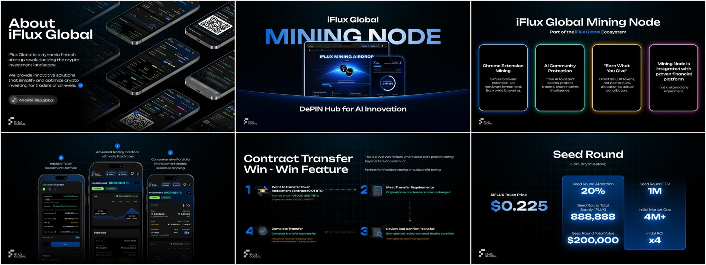
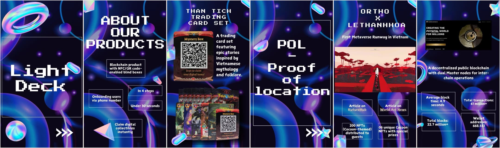

4+ years in crypto, writing in English and Vietnamese
Web3 content writer for crypto teams
I turn DeFi, tokenomics and on-chain research into articles, pitch decks and whitepapers that retail and institutional readers follow. Open to full-time roles and freelance projects.
Services for crypto teams
Five formats I deliver, in English and Vietnamese, and the teams I made them for.
- Articles and long-formLayer 2, Web3 gaming, DeFiTradecoinVN
- News and token explainersLaunchpools, listings, RWAInterlock
- Pitch decksFor investors and clientsiFlux, Kardia
- WhitepapersDePIN nodes and tokenomicsiFlux Global
- Content and SEO plansX, Telegram, Facebook, DiscordiFlux Global
Investor pitch deck, 25 slides
Built for iFlux Global’s fundraising: the BD team used it with venture firms and strategic investors.

Mobile pitch deck, 34 slides
A vertical deck for a KardiaChain business vertical, made for the BD team to present from a phone. The full deck is under NDA.

Results of a content plan: 1.8M impressions
A calendar for X, Telegram, Facebook and Discord, October to December 2025: topic, format, channel and time for every post, then tracked on views and interactions.
- Impressions, 3 months
- 1.8M
- Engagement rate
- 21.2%
- Engagements
- 397.4K
- Profile visits
- 16.8K
Writing: articles, news and a whitepaper
Only work I can share without affecting former clients. Most is in Vietnamese. TradecoinVN has since closed, so its articles open from the Internet Archive.
- Làn sóng game Web3 tiếp theo của thị trường Crypto có gì đặc biệt?Article, TradecoinVN, archived copyRead
- Tổng quan về layer 2 Q3/2023: Optimistic Rollup và zkRollupArticle, TradecoinVN, archived copyRead
- AltLayer (ALT), dự án thứ 45 trên Binance LaunchpoolNews, InterlockRead
- Giá ONDO sau tin Ondo Finance mở rộng sang APACNews, InterlockRead
- DePIN whitepaper, first draftWhitepaper, iFlux Global, PDFRead
About
Adrian is the name I use at work; Dinh Duc Huong Thong is the one on my CV. I started as a reporter at Znews and Robb Report Vietnam in 2021, moved full-time into Web3 in 2022, and have since written for a Web3 agency, a trading community’s website and the product teams at Kardia and NTK Software, where I now lead content for iFlux Global and two prediction-market analytics products. I write in English and Vietnamese, and I plan the campaigns that carry the content.
- Based in
- Ho Chi Minh City, Vietnam (GMT+7), remote-friendly
- Languages
- Vietnamese (native), English (professional)
- Now
- Senior Content Marketing Specialist, NTK Software
- Before
- Kardia, TradecoinVN, Blocksolfi, Robb Report Vietnam, Znews
- Education
- B.A. Journalism and Communication, VNU-HCM